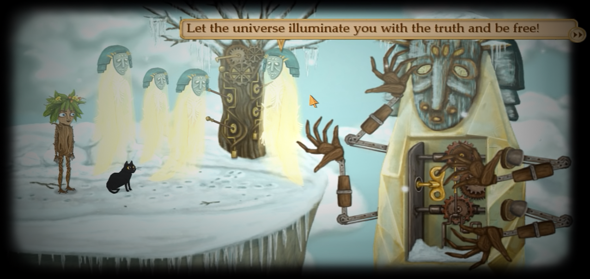
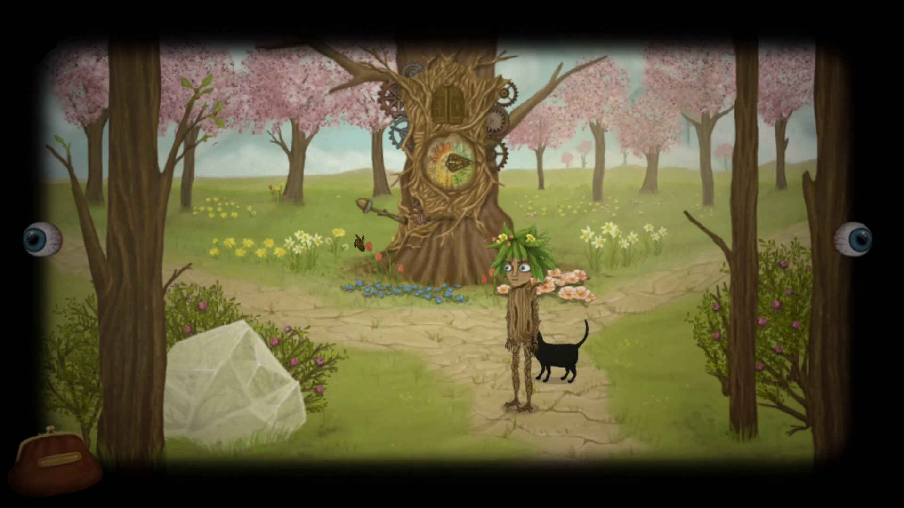
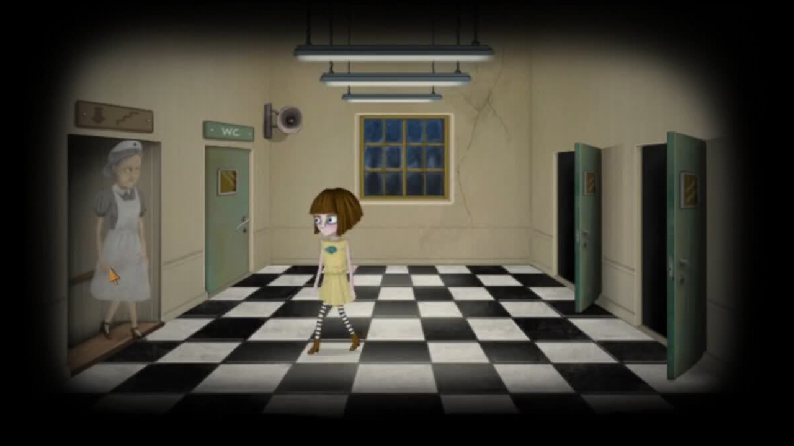
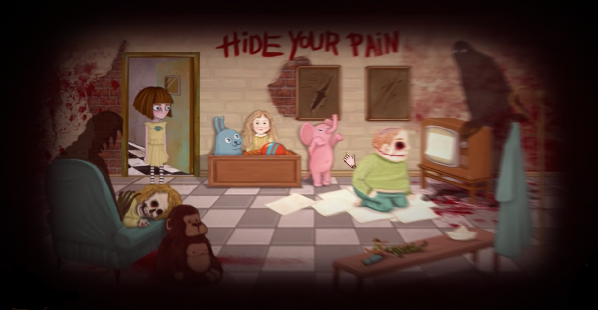
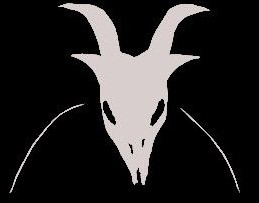
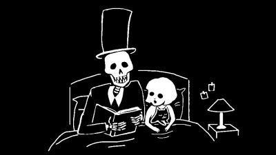

Jogo: Franbow
Desenvolvedor: Killmonday Games AB
Lançamento: 27/ago./2015
Catecorias: Terror Psicologico; Boa Trama
My Score: ⭐⭐⭐⭐⭐
Minha música preferida na obra :3
Sobre o jogo
“Fran Bow é um jogo de aventura assustador que conta a história de Fran, uma jovem que luta contra um transtorno mental e um destino injusto.” Essa é a descrição de Fran Bow, porém na minha opinião é extremamente vaga para a história incrível que esse jogo tem para contar. Como havia comentado na página de Milk Outside a Bag of Milk, adoro jogos com imersão psicológica que brincam com a realidade, onde você se encontra em uma situação que não sabe a oque é verdade ou fruto da imaginação da protagonista. No jogo você controla a protagonista Fran Bow, no início do game é mostrado um pouco da história antes dela ir parar no Hospício Oswald, local onde se inicia o jogo.
Só um comentário, perdão se estiver sendo muito simplório em relação a explicação dos acontecimentos, estou tentando ao máximo não estragar sua experiencia ao jogar o jogo :3.
Já no início do game você ganha um remédio que te faz teoricamente mudar de dimensão, onde tudo acontece ao mesmo tempo, uma junção de todas as dimensões, e você terá que usar isso ao seu favor para avançar no jogo, destrancando portas e adquirindo itens. Além disso, durante todo o jogo você foge de uma entidade maligna chamada Remor, que sempre deseja o seu pior.
As 5 dimensões
No universo de Franbow existem 5 dimensões são elas: Luz, Vida, Humanos, Morte e Escuridão. Durante o jogo, Franbow te a habilidade de viajar entre essas dimensões, e cada uma delas tem sua peculiaridade e aspecto. Irei fazer uma breve explicação de cada uma delas a seguir:
Obs: Pode conter spoilers.
Dimensão da Luz
A dimensão da luz são onde vivem os Valokas, entidades que são como anjos, criaturas puras, elas são vistas em Franbow e descobrimos que os Kamalas, as sombras que aparecem durante todo o jogo, são uma espécie de versão ruim dos Valokas, em que se em contato com a água podem sofrer certo dano e se tornarem Valokas. Além disso não há muita informação sobre essa dimensão.
Dimensão da Vida
A dimensão da vida se apresenta no jogo quando Franbow acaba indo pra Ithersta, que se encontra na dimensão da vida, nessa realidade tudo remete a vida, os personagens são insetos ou arvores e galhos, até a protagonista vira uma espécie de Franbow versão arvore, lá tudo é verde e cheio de vida com paisagens bonitas e agradáveis.
Dimensão dos Humanos
A dimensão dos humanos é onde vivemos, em que nos encontramos no início do jogo e onde tudo começa, não há muito oque falar sobre esta dimensão.
Dimensão da Morte
Muito próxima da dimensão dos Humanos nos temos a da Morte, nessa realidade habitam os Kamalas, que são seres malignos que se alimentam da depressão e tristeza das pessoas, essa é a primeira dimensão que exploramos durante o jogo, utilizando-a para chegar em lugares ou abrir portas que não temos acesso na nossa dimensão, isso ocorre porque a realidade dos Humanos e a da Morte estão de certa forma interligadas.
Dimensão da Escuridão
Aqui habita a grande mãe Mabuka, uma espécie de ser que governa a escuridão, nesta realidade tudo é ao contrário doque conhecemos, o que é bom é ruim e o que é ruim é bom, quanto mais maligno melhor. Além disso tudo nessa dimensão é extremamente bizarro e maluco e é aqui de onde sai as criaturas mais poderosas como o Remor.
Minha visão
Fran bow é um jogo extremamente imersivo que vale a pena jogar, definitivamente é um dos jogos que menos sei sobre lore ou teorias dessa lista, mas um dos que mais me tocou, justamente por isso que não busquei vídeos sobre, nem nada, senti que oque eu vivi jogando aquele jogo deveria ficar ali, sendo especial só ali, não como um medo de saturar o jogo, mas sim como uma maneira de eternizar o sentimento que tive durante meu tempo jogando, esse jogo é verdadeiramente especial.
